The Connections

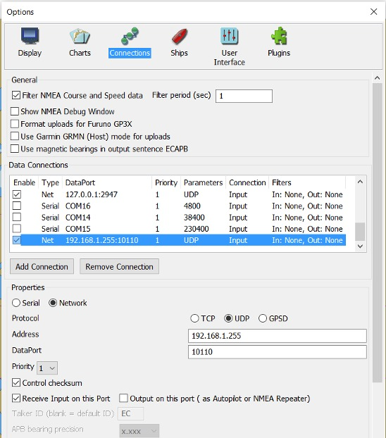
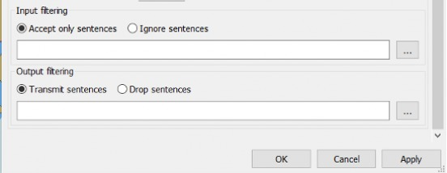
Features and Improvements
NMEA Sentences moved to “Advanced Features”
OpenCPN version 3.2 featured a complete redesign of the NMEA message handling structure, including a new GUI and monitor window. This feature has been further improved and tuned in version 4.2. The current scheme provides extensive NMEA management capabilities, including:
- Input message filtering, by TALKER ID and/or message type.
- Implement configurable NMEA Talker ID.
- Virtually unlimited input port multiplexing, with shared I/O and individual data rate settings.
- Selective message echo capability, similar to third-party mux applications.
- Programmable output port messages, for e.g. autopilot interfaces.
- Full Network input and output, including TCP, UDP, and GPSD services.
- GPSD client support for Windows platforms.
Contents
Linux Serial Connections
Connections Window
Example Data Connections Window
Filter NMEA Course and Speed Data
Show NMEA Debug Window
Data Connections - Add and Remove
Add a Serial Connection
Add a Network Connection
Network GPSD connection
Connections Filter
Input Filtering
Output Filtering
Connection Notes
Sending an Active Route to an Autopilot
Sending Routes and Waypoints to a GPS
Broadcast and Multicast
Linux Serial Connections
Make sure that you belong to the “dialout” group. To find out, run the “$groups” command. If you're not in “dialout”, add yourself with the command “$sudo usermod -a -G dialout $USER”. Logout of your current session for group changes to take effect. Check this straight away, it will save you from frustration later on. If there is a problem connecting the GPS to a physical port, such as /dev/ttyS0, the reason is probably that you don't belong to “dialout”. OpenCPN will display a warning, once per session, if you try to configure a serial connection, or starts the program with an active serial connection, and don't belong to the right group.
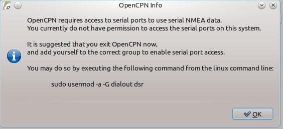
Red Hat based Linux versions are using the “uucp” group. Check what applies to your version of Linux, by using the return from the command stat -c %G `ls /dev/*|grep -m1 tty[A-Z,a-z][0] If the return is “root”, upgrade to a contemporary Linux version.
Connections Window
All this is different from the logic in earlier versions of OpenCPN. From version 3.2, there is no defined “autopilot” port. The autopilot is simply connected to any available output- enabled data-stream, and gets everything on the bus, subject to user specified output filtering. There is no specific “shared” AIS and GPS port, as all ports are shared.
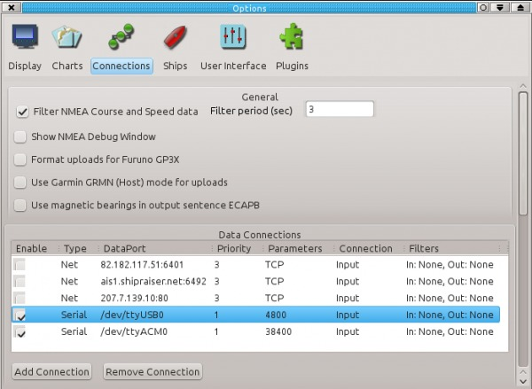
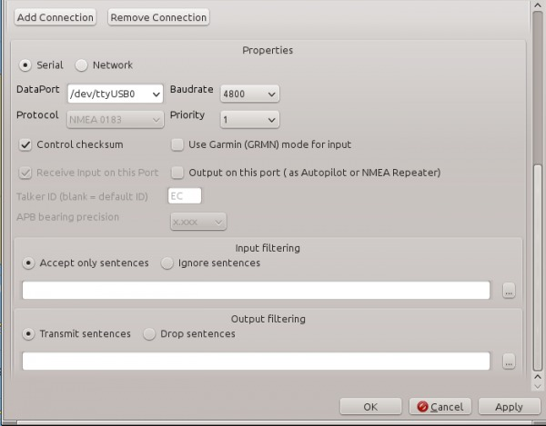
The key point to keep in mind with this new setup is the complete orthogonality between message sources, message destinations, and transport media. All messages come and go from an internal “bus”, and all internal modules have access to all messages. Any message can be received, and possibly re-transmitted according to the configuration established. If the messages get onto the bus,
OpenCPN will do the right thing. For example, if it is an AIS message, the AIS module will get the message and act accordingly. Plugins also get all messages.
Example Data Connections Window
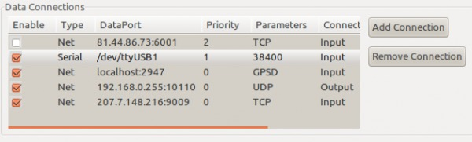
To get a taste of what can be done, we start with a lab scenario. In the screen-shot above, four Data Ports are enabled.
- GPSD on localhost port 2947
- /dev/ttyUSB1 as ais port
- output port to a computer on the local network
- San Fransisco AIS feed.
Note that the connections are automatically sorted in order of the priority setting The picture is from a Linux computer, but the receiving box is an Win XP. Both boxes are configured to use the same broadcasting address '192.168.0.255' on the local network, using the default 10110 port. Note that UDP, and not TCP, is used. OpenCPN on the XP box receives and shows all info from the three first ports and even data from the VDR plugin, if it's running. All input sources are merged together and available to transmit to an external computer. Every computer on-board can be used as a repeater to the main box!
Note that in this scenario the UDP connection is output only. In previous releases of OpenCPN all UDP data connections would read data as well as write. This is a possible configuration in the current release but neither required nor generally desirable. If a broadcast connection is read/write, all data written will be read back leading to the potential for data loops.
- To avoid this, the priority of any read/write broadcast connection should be set lower than that of any other interface on which OpenCPN receives data for re-distribution over that interface.
- For most purposes setting a broadcast connection to either read or write is the preferable solution.
- The San Francisco AIS feed has now changed to ip address 76.103.90.196, also on port 9009.
There is no advantage to using a broadcast address on the local network with just a few computers. It's as easy to just specify the addresses of the receiving computers as outgoing connections on the transmitting computer. The “receivers” specify the “transmitter” as address for a connection.
In real life, a common setup will include input from GPS, AIS and output to an Autopilot. If your GPS produces GPRMC, then this will be automatically shipped to the autopilot.
- Everything on the internal multiplex bus will be sent to the output port that the autopilot is connected to, even if a route is inactive.
- If, a route is active, OpenCPN will create and send NMEA (EC)RMC sentences to output data ports.
- The only reason OpenCPN “synthesize” an ECRMC sentence is to cover those odd cases when there is no other source of RMC in the system, and the Autopilot wants variation, SOG, etc. This might be the case if an older GPS produces GPGLL alone, for instance, which has no var. There is no “new” information in the transmitted, synthesized ECRMC.
- The autopilot might be complaining that it is getting RMC information from two different talkers (GP and EC) at the same time, and cannot decide what to do. The easiest solution if don't like the ECRMC, is to filter it out of the output stream of the port connected to the autopilot. Or choose a filter to allow only GPRMC and ECRMB for this port.
Filter NMEA Course and Speed Data
Providing a rolling average of COG/SOG, with configurable sampling period. This feature is useful, for example, if you find that course and speed from the gps is varying erratically due to the sea state. The Dashboard plugin is not affected by this setting - COG and SOG are updated about once per second.
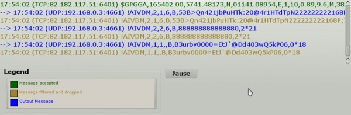
Show NMEA Debug Window
If you check this box you will get a window that shows the NMEA data sentences coming into or going out from OpenCPN. In the picture above we can see the color-coding at work. Messages in red could occur as well, and indicates a transmit error. Connections Priority change messages, will also be printed to the NMEA Debug Window. The reason that AIVDM messages are both dropped and appear as “Output message”, is that there is more than one source for this message, and the filter just applies to one source.
Have a look at the page NMEA Sentences to see which messages are understood. OpenCPN generally does not care about the Talker ID, the first two letters in the message type. $GPGGA above, is the talker GP = the gps, sending a GGA = position message, for example. At the end of each sentence there is a “*” followed by a calculated checksum.
To see all messages it's important to close the Options dialog completely, while leaving the NMEA Debug window open. The ECAPB sentences etc, will not appear while the Connections dialog box is open as autopilot output is disabled during this time.
Known issues: The pause button only works if the main Options dialog is closed. In Linux, the debug window can only be closed by unticking the Show NMEA Debug Window box, unless the the main Options dialog is closed.
If there are NMEA sentences in the debug window, then OpenCPN has opened the port set in the Data Connections. Note that the source of each NMEA sentence is printed after the time stamp o each line. If your GPS port is configured, and there is no “red” boat, then the only reasons are: no gps fix or wrong sentence configuration from the GPS.
Messages originating from GPSD or the VDR (Voyage Data Recorder plugin) will also show up in the debug window.
For simple NMEA data stream debugging, add the following to your opencpn.ini file:Under [Settings] add a line DebugNMEA=1500 This will provide up to 1500 debug messages pertaining to NMEA traffic to the opencpn.log.
Format uploads for FurunoGP3Xinputfiltering: If the special Furuno gps protocol is needed, tick this box. The reason is that Furuno uses their own version of NMEA for uploading routes. Furuno GPS users take note. It is now allowed to use a numeric, two digit OpenCPN route name (e.g. 10, 21, etc).
Use GarminGRMN (Host) mode for uploads. Make sure that this box is ticked, if you have a Garmin GPS. The reason for this is that Garmin units cannot accept route uploads via standard NMEA0183. This is a “design feature” of all Garmin receivers.
Use magnetic bearings in output sentence ECAPB. Some autopilots, among them Simrad, require navigational bearings, contained in the APB sentence, to be transmitted as Magnetic bearings rather than as True bearings, OpenCPNs default.
Data Connections - Add and Remove
Two Buttons “Add Connections” and “Remove Connections”, to the right of the Connections window are the key to this whole tab.
The enable choice at the start of each connection line, is handy to organize connections, but still only use those that are needed for the moment. Tick or un-tick, and then press “Apply”, to activate the setting.
A connection can be used for input and output at the same time, with the reservation that they have to use the same Baud rate. For more details, read on.
When pressing “Add Connections” two basic choices are given, a serial or a network connection.
Add a Serial Connection
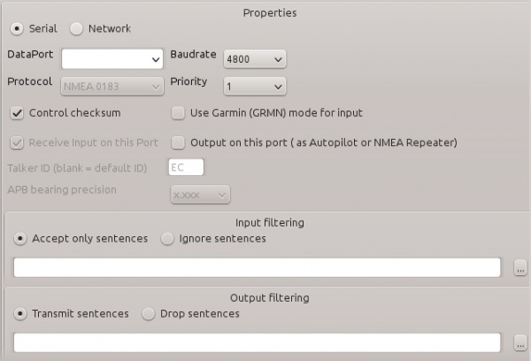
DataPort: Pick a port by pressing the \/ o the right side of the field. If the port you are looking for does not appear in the selection, write the correct port yourself in this field.
Baud Rate: This is normally 4800 for GPS and 38400 for AIS, but check the documentation for the connected device. It's important to get this right and not just guess.
Protocol: For future use, as only NMEA 0183 works, for now.
Priority: Higher number equals Higher priority. The priority is set for each NMEA sentence individually. As long as a higher priority stream is available it's used. If this fails the next stream in line, with lower priority, kicks in and is used, until a higher priority stream appears. The present filter does not handle the case where, for example position messages, are received from different sentences.As an example, GPGLL and GPRMC both transmits the position information. The last received of either message will be used.
Control Checksum. At the end of each NMEA sentence is a checksum, that makes sure that sentences are correctly received. This box is ticked by default, as OpenCPN calculates the checksum and compares it to the received checksum. Only sentences with a valid checksum are passed through. Un-ticking may help, if an application calculates checksums incorrectly or if the checksums are missing.
Use Garmin(GRMN) mode for input: Make sure that this box is ticked, if you have a Garmin GPS set to this mode. The reason is that Garmin uses their own serial protocol.
Receive input on this Port Greyed out here as it only applies to a network connection. see more below.
Output on this port (as Autopilot or NMEA repeater ): Tick this box if the connection will be used for output. A common case is sending NMEA to an Autopilot. * Talker ID solves the problem where some “temperamental” devices, which should accept given sentences irrespective of the talker ID, in fact only accept for example GPRMC and not ECRMC
APB bearing precision is greyed out unless “Output on this port” is checked. APB is the NMEA sentence “Autopilot Sentence 'B'”. The precision can be set to between 0 and 4 decimals, were 3 is the default. Some autopilots requires a different precision than the default, to work. Check your AP documentation.
- Note: The APB bearing precision (or NMEAAPBPrecision in Opencpn.ini file) setting is set in the Options > Connections settings page for connections that have outgoing messages. The precision is applied in the src/nmea0183/ apb.cpp file and is applied to:
- CrossTrackErrorMagnitude
- BearingOriginToDestination
- BearingPresentPositionToDestination
- HeadingToSteer
- This change was made as some auto pilots are limited in the precision they can accept in the APB message. So all other messages and internally the precision is not changed. There is no change to the XTE message as that was not requested at the time. “XTE - Measured cross track error” NMEA message, that is a part of the APB message is not adjusted by the APB bearing precision setting.
Add a Network Connection
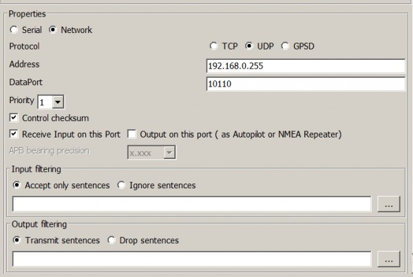
Protocol : There are three choices of protocols **TCP**, **UDP** and **GPSD**.
TCP: is a “connection-oriented” protocol which provides a reliable link between two network endpoints. TCP ensures that any network packets lost in transit are re-transmitted. Internet AIS servers normally accept TCP connections as do many serial-to-network/wifi devices.
To make a connection to a remote TCP server, enter its IP address or hostname in the “Address” box and the TCP port on which the server listens in the “DataPort” box. Many devices use a non-standard TCP port rather than OpenCPN's standard 10110, so do check the server's documentation. If “0.0.0.0” is entered in the Address box, OpenCPN will act as a TCP server accepting a connection from a remote TCP client. OpenCPN will listen on all its host computer's network interfaces for TCP connections to the port specified in the “DataPort” field. There should normally be no reason to select a “DataPort” value other than the standard 10110 unless multiple servers are required:
- In the current implementation a single data connection can accept only one client.
- If multiple clients wish to connect to OpenCPN, a dedicated data connection must be provided for each and each data connection must have a different DataPort.
UDP: is a method of transmitting data as simple “datagrams” without negotiating a connection between two endpoints. It involves no detection and retransmission of data lost in the network. Within a small home/boat network such data loss should not normally occur and in any case, NMEA data is generally updated by “talkers” on a regular basis. Unlike TCP which involves a connection between two endpoints, UDP data may be received by many “listeners”.
An OpenCPN UDP data connection will listen for data destined for the specified DataPort on any system interface or the broadcast address of any connected network. If you don't need to receive multicast data or transmit any data, you may enter “0.0.0.0” in the “Address” box if you are unsure of what to enter there. Alternatively you may specify the address on which you intend to receive data. In both cases behavior will be the same. If you wish to receive multicast data you must enter the multicast address to which those data are being sent or the system will not see them. If you wish to transmit any data (“Output on this port” checked) you must put the address you wish to send data to in the “Address” box. In all cases (transmit, receive or both) the DataPort must be specified. For more information about broadcast and multicast, see Broadcast and Multicast below.
GPSD: is a Unix/Linux gps server, which means that several different applications can share one gps receiver. Linux users have the choice between using serial or GPSD connections for their gps input.
- Ubuntu users take note! If gpsd is installed - use it. If you prefer a serial connection, un-install gpsd. The reason is that gpsd starts automatically when,for example, an USB gps is connected. This will block the serial port that the gps communicates with( /dev/ttyUSB0 in many cases), hence no separate serial connection to the gps is possible. So it's an either or situation.
- OpenCPN also has support for Windows clients. So a windows computer should be able to connect to GPSD running somewhere on a network (testing), as an alternative to an UDP connection, described earlier. * Address: The network address to connect to. In the example above we used the broadcast address for convenience, but specifying host to send to, and host to receive from, works as well.
Port: The port to connect to on the network address. The default port for UDP is 10110. Port 10110 is designated by IANA for “NMEA-0183 Navigational Data”. There should not be any reason to change this port, but it is possible. See below. The default port for GPSD is 2947. Do not change this!
- For your own local connections use port-numbers greater than 1023 and avoid ports used by other applications. Ports in the range 49152 through 65535 are not assigned to other applications and should be OK. Make sure that no firewall is blocking the port you pick.
Network GPSD connection
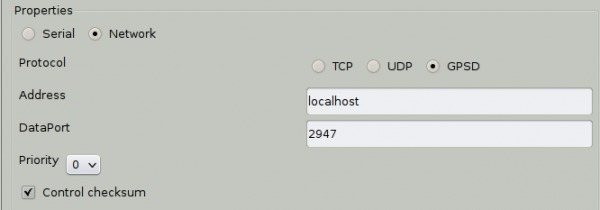
When connecting to GPSD, running on your local computer, use the settings shown above.
Connections Filter
For each source line in the data connection windows, it's possible to specify exactly which NMEA sentences to receive, and which ones to drop. Similarly it's possible to control exactly which sentences to send out to, for example, an autopilot.
The applied filters for each connection are stated in in the “Filters” column in the Data Connection window. The default for a connection is no filters at all. * The set filters applies to both the core program and the plugins.
Filtering can be observed in real time, through color coding in the Debug Window.
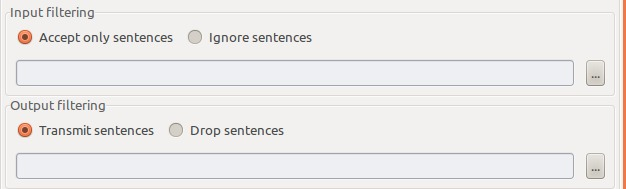
Accept only sentences: Either base your filtering on stating which sentences to accept or which to ignore.
Ignore sentences: Same as above. To select filters press the button. The dialog below becomes available.
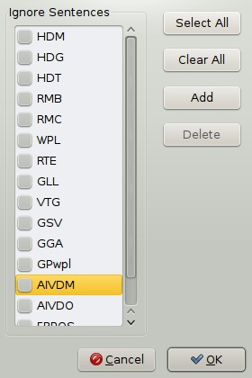
A lot of NMEA sentences are listed. Just tick the box to select a sentence. “Select All” or “Clear All” are also available. For sentences not listed press “Add”, and enter a new NMEA sentence.
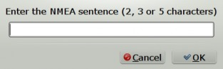
Your entry must conform to these rules.
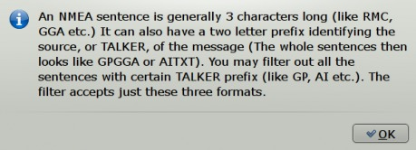
When you are finished, press “OK”, your new entry will appear at the bottom of the list of NMEA sentences to filter. It will already be ticked, so just press “OK” until you are back in the original Connections tab. Now press “Apply”. The implemented filtering should now be visible on the connection line. For more, see below
Receive input on this port: This box should be ticked if you want to receive receive data on this connection. If the connection will only be used to output to other devices it should not be ticked. If you wish to broadcast UDP data for consumption by other devices or programs, leaving this box unticked will save you having to worry setting the priority of the connection to avoid data loops.
Output on this port (as Autopilot or NMEA repeater ): Tick this box if the connection will be used for output. A common case is sending NMEA to an Autopilot. * APB bearing precision is greyed out unless “Output on this port” is checked. APB is the NMEA sentence “Autopilot Sentence 'B'”. The precision can be set to between 0 and 4 decimals, were 3 is the default. Some autopilots requires a different precision than the default, to work. Check your AP documentation and see Note below.
OpenCPN creates and sends the NMEA ECRMB and ECRMC sentences to the A/P output port when a route is activated. If variation is not otherwise present, OpenCPN includes variation, coming from the WMM plugin, if installed and enabled.
Note: The “APB bearing precision” (or NMEAAPBPrecision in Opencpn.ini file) setting is set in the Connections settings page for connections that have outgoing messages. The precision is applied in the src/nmea0183/ apb.cpp file and is applied to:
- CrossTrackErrorMagnitude
- BearingOriginToDestination
- BearingPresentPositionToDestination
- HeadingToSteer
- This change was made as some auto pilots are limited in the precision they can accept in the APB message. So all other messages and internally the precision is not changed. There is no change to the XTE message as that was not requested at the time. “XTE - Measured cross track error” NMEA message, that is a part of the APB message is not adjusted by the APB bearing precision setting.
{{opencpn:manual:action-filter.jpg?nolink&28x30}}
Input Filtering
Some examples to illustrate how things works.
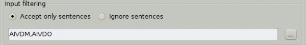
Accepting the filter above leads to this in the filter column on the connection line:
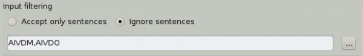
If “Ignore sentences” is marked instead, the line looks like this:
Output Filtering
Similar to input filtering above.
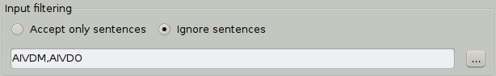
Transmitting three sentences.
Another Example of Output Filtering
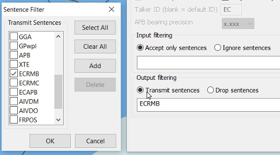
Feature: Can now select the NMEA talker ID of sentences output by OpenCPN on a given port.
Situation: OpenCPN (correctly) outputs its NMEA sentences with the “EC” talker ID as is normal and expected behavior (see below).
Problem : Some “temperamental” devices which should accept given sentences irrespective of the talker ID in fact only accept for example GPRMC and not ECRMC.
Example: An Icom VHF is a such example. and because the multiplexer has been set to give precedence to nav info provided by OpenCPN, rather than the GPS, the result is that when OpenCPN is driving the autopilot, the VHF does not receive any position anymore for its DSC feature. Safety-wise, this is not desirable.
Solution: Being able to either change the ECRMC sentences into GPRMC, or duplicate ECRMC on the output port should solve the issue.
Send to GPS
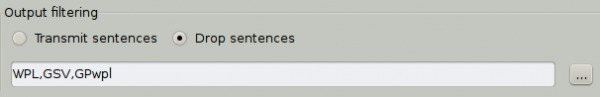
Dropping them instead.
Connection Notes
If you already have an application connected to your gps, on a serial port, OpenCPN will not be able to connect to the same port. Two applications cannot use a port simultaneously . __On Linux use Gpsd in such a situation. Of course this only works if your “other application” supports the Gpsd. As an alternative on Linux you can use Kplex (also for Mac) or Muplex which can create pseudo terminals (“virtual serial ports”) to share NMEA data between applications.
If a NMEA sentence is filtered on an input connection and “LegacyInputCOMPortFilterBehaviour=1” setting in opencpn.conf|ini, it will still enter the internal multiplexer. So, it will be available to output connections, unless it's filtered there as well. If “LegacyInputCOMPortFilterBehaviour=0” then the message will not be placed on the internal multiplexer. This will only work for serial connections. Echoing back a network connection, on the input port for output, will not work
- NMEA data can also come from the VDR plugin. They will be labeled as such in the Debug Window and have “0” priority.
No Flow Control on Serial Ports By nature NMEA doesn't do flow control. If a message gets lost, it gets lost… It will be repeated at some point, and buffering a delayed message that has lost it's meaning, when there is more current & accurate data available is not useful. f interfacing the NMEA-specified way, there is no path for hardware flow control. It's not compatible with NMEA in any way.
Sending an Active Route to an Autopilot
Autopilot APB and XTE precision settings are harmonized to always be the same.
On Route activation, OpenCPN sends the ECRMB, ECRMC and ECAPB NMEA sentences to an Auto Pilot, if it is connected to a port, with output activated.
- Implement configurable NMEA Talker ID
- To test that the ECRMB, ECRMC & ECAPB sentences are being sent, simply set up a port with output activated and
Right-click on the chart and select “Navigate to here”, then bring up the Options > Connections > Nmea Debug window and look at the Blue output sentences for ECRMB, ECRMC and ECAPB. Below is one example of output connection settings.
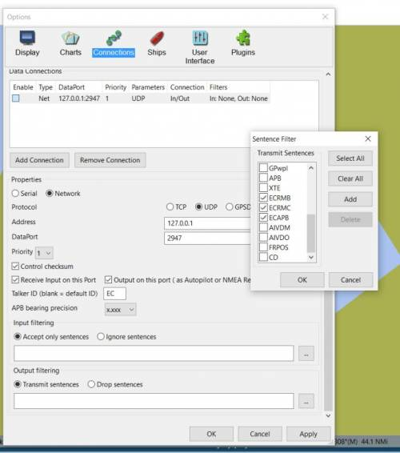
In the example above we have used NavMonPC to read a previously recorded nmea file, and then set up a Virtual Com Port (Com14) which OpenCPN Options > Connections to a Serial Com14 port is then established to read the nmea data stream from NavMonPC.
When you send to the autopilot you should see blue output sentences in the Nmea Debug window, once the Options Menu is closed (very important, because all data is frozen until this menu is closed.) * Another way to test for the EC sentences see “Send to GPS” below.
Broadcast and Multicast
UDP data may be delivered to more than one system when sent to certain special addresses
A “broadcast address” is listened to by all devices on a network. It is normally formed by taking the network address (the first part of the IP address common to all systems on your local network) and setting the last part (the number which is different for every computer) to a value represented by all “1”s in binary. If all your devices' addresses start with “192.168.1”, your network's broadcast address will likely be 192.168.1.255 (255 is “11111111” in binary. This is why IPv4 addresses written like this never contain numbers higher than 255. Except for in the movie “The Net” and we don't talk about that). If you specify an address ending with “255”, OpenCPN assumes you mean a broadcast address. This is not always true but will result in desired behaviour in almost all cases.
The special broadcast address “255.255.255.255” is also listened to by all devices. It should not normally be used to transmit data from OpenCPN. Use your local network's broadcast address instead.
A “multicast address” is listened to only by devices which wish to receive information on that address. IPv4 addresses in the range 224.0.0.0 - 239.255.255.255 are multicast addresses. If you specify a multicast address for a UDP data connection, OpenCPN will tell your computer to listen for datagrams on that address. * More than one system may send data to broadcast or multicast addresses, so this is a “many to many” communications medium. * You cannot use broadcast or multicast addresses with TCP. TCP is a “one to one” connection.
Devices must to some extent process all broadcast packets on the network whether they are interested in them or not. Multicast packets are normally only seen by devices which have registered an interest in a particular multicast address. Consequently multicast is more efficient than broadcast although this is usually of little consequence in a small network. Despite being used by NMEA-over-IP protocols such as IEC 61162-4 and the forthcoming NMEA OneNet, NMEA-0183 over IP multicast is far less widely supported in marine applications than NMEA-0183 over IP broadcast.
There is no multicast address mandated for NMEA-0183 data in this context although you should avoid those addresses used by other protocols.
When using multicast with OpenCPN it is suggested that an address be used in the range 239.192.0.0/14 specified by RFC 2365 as the “Organization Local Scope”. If in doubt, try 239.194.4.4.
There is no mechanism in OpenCPN to specify the network interface through which multicast packets are sent or received. This will be determined by your system. In some cases it may be necessary to manually adjust your system's routing table to ensure that the desired network interface is used. Refer to your system's documentation if this proves necessary.
If you transmit UDP broadcast or multicast, then you should set the priority of the “real” NMEA input to something higher than the UDP stream. If not, prepare for problems. The reason is that if you are broadcasting, then you yourself will get the UDP message as well, which again will be retransmitted…… Obviously, it duplicates the “real” incoming data. Thus we get source priority flip-flop on each message, since they have the same priority. For example set the UDP priority to “0” and real incoming connection to “1” or higher. Multicast loopback is not disabled for consistency with broadcast behaviour. This means that priorities must be set as detailed above when transmitting over multicast, but multicast communication between multiple instances of OpenCPN on the same system remains possible. * The firewalls on some systems (e.g. OpenSuSE linux) may block broadcast and multicast data that you wish to receive. Refer to your system's documentation to determine how to allow such data to reach OpenCPN.
Also read about the “Activating Routes and Active Route Console” in Marks and Routes towards the bottom. It is essential to have turned on an Active Route in order to send waypoints to the Autopilot.
Also read about “Route to Autopilot” in Advanced Features for more details.
Sending Routes and Waypoints to a GPS
The feature “Send to GPS”, which appears in the right click menus for waypoints and routes and in the Route Manager, is not linked to connections. The upload port does not even need to appear in the Datastream connections list. Its a completely separate concept. For this reason users must define a separate upload port, that is remembered by OpenCPN. The port can be changed by clicking the button in the Route Manager.
NMEA provides no handshake protocol for Route and Waypoint upload. So, OpenCPN simply sends the Route/WP information out on the port, without having any way to know if there is actually a device connected to the port.
The Garmin protocol does provide handshaking, so OpenCPN can be sure that the information is uploaded correctly. The Garmin protocol will fail if the device is not a Garmin.
In the case of standard NMEA, the indication “Route successfully uploaded” is not very meaningful. You can say that it just means that a port was found, and writing to that port succeeded.
In the case of “hockey puck” GPS receivers, they probably ignore Route and WP uploads, since there is nothing for them to do with this information anyway.
The key to remember is that Route and Waypoint upload process is completely independent of normal running Datastream operation. They are two separate sub-systems.
It does no harm to assign the Datastream GPS port as an output and input device together. Some users might reasonably expect that this would be required for Route and W/P uploads. Most GPS receivers would ignore input sentences other than Route and W/P uploads anyway.
Then in the Chart window we hover over the temporary goto waypoint and right click, then select “Send to GPS (Serial Com 14)” and by quickly looking at the NMEA Debug window (Options > Connections > Check Nmea Debug Window, then be sure to CLOSE the Connections Menu leaving the Nmea Debug Window up, or nothing will happen!). Then you will see the sentences sent. See screenshot below.
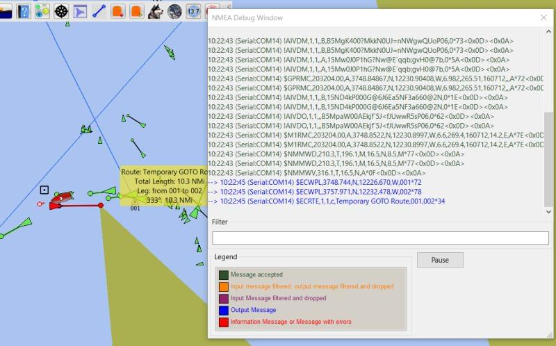
- Note the active route above was a 4 point route, but the active leg and active wp was the 3rd point for the above screen.
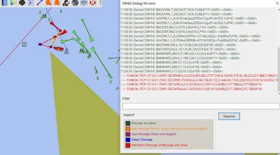
- Note the screenshot above is for the same Active Route, but the active waypoint is the 2nd point.
- Note: There are many technigues for testing and simulation. Using NavMonPC to read a previously recorded file is one very good way. The other is to use OpenCPN's VDR_pi to read the nmea file, which is in some respects simpler for a new user.
NOTES
Win 8.1 com ports stop working
Refer to http://willkamp.com/opencpn/flyspray/index.php?do=details&task_id=1706 Check the cables and connectors and for USB Port timeout. How to Add or Remove “USB 3 Link Power Mangement” in Power Options in Windows 8 http://www.eightforums.com/tutorials/50276-power-options-add-remove-usb-3-link-power-mangement.html http://helpdeskgeek.com/windows-xp-tips/prevent-windows-from-powering-off-usb-device/
UDP Protocol vs TCP Protocol
UDP is a method of transmitting data as simple “datagrams” without negotiating a connection between two endpoints. It involves no detection and retransmission of data lost in the network. Within a small home/boat network such data loss should not normally occur and in any case, NMEA data is generally updated by “talkers” on a regular basis. Unlike TCP which involves a connection between two endpoints, UDP data may be received by many “listeners”.
UDP “For UDP mode the IP address 127.0.0.1 is also known as localhost and used when sending to a client on the same machine. The IP address of any other machine on the network may be given.”
To reach all machines within a local network, like a wifi router, use the address 192.168.x.255 with the Protocol set at UDP.
Example for a local net where the router address is 192.168.1.0: python VDRplayer.py Hakefjord.txt 192.168.1.255 10110 0.05 UDP Any receiving machine can then use IP address 0.0.0.0 and port 10110 in the connection properties
TCP For TCP mode the IP address is the address of the machine running VDRplayer. It may be localhost or 127.0.0.1 if the client is running on the same machine.
If VDRplayer is running on its own machine then give the IP address: of that machine that other clients can reach (e.g. 192.168.1.6 assuming that is the address of the machine running VDRplayer.py).
The Port Number: 10110 is somewhat arbitrary but it is the “undocumented standard” for NMEA over IP and must match the client receiver port number. Any port number permitted by the local firewall will work. It is best not to use well known port numbers such as 80, 22, etc.
The time delay of 0.05 (50mS) is the delay between each line in the file.
UDP received When adding a network connection for UDP receive there is no need to specify the IP address. The port is required but not the IP address. The sending end needs to specify both IP address and port number.